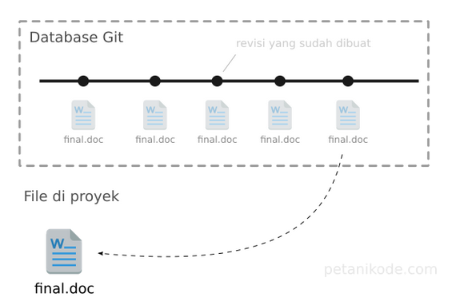
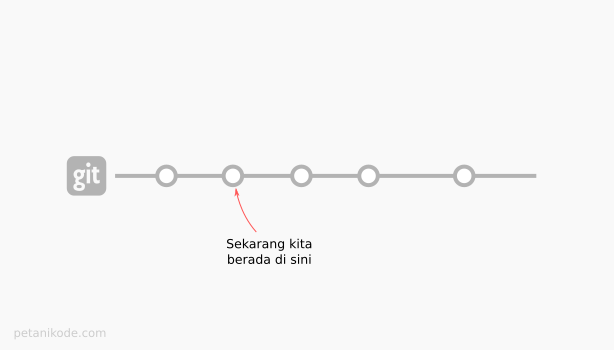
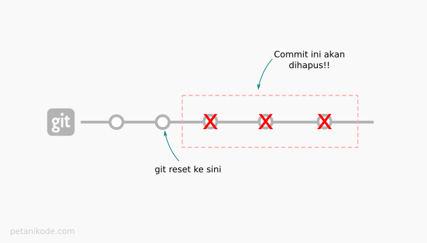
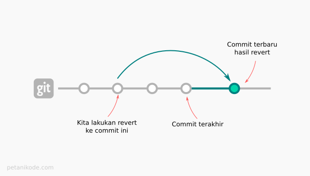
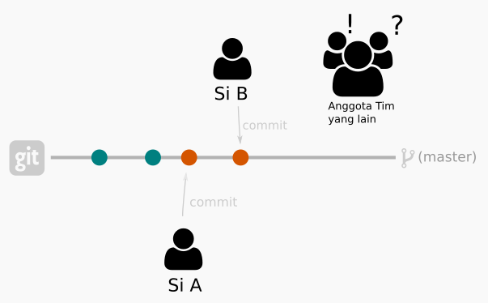
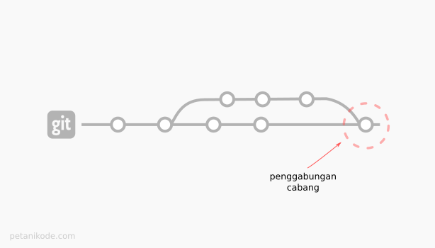
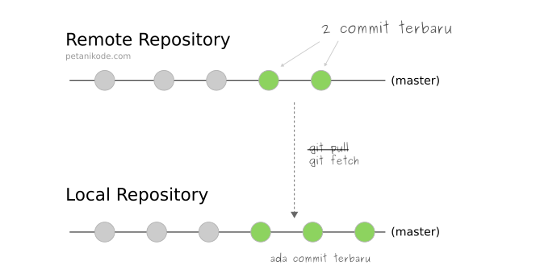
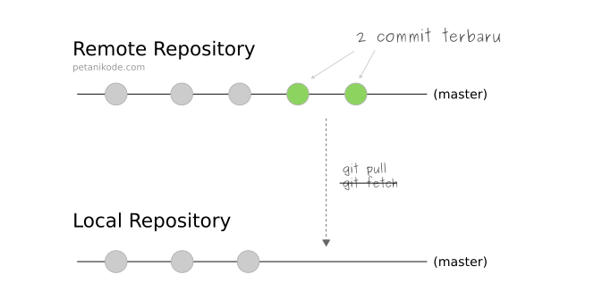
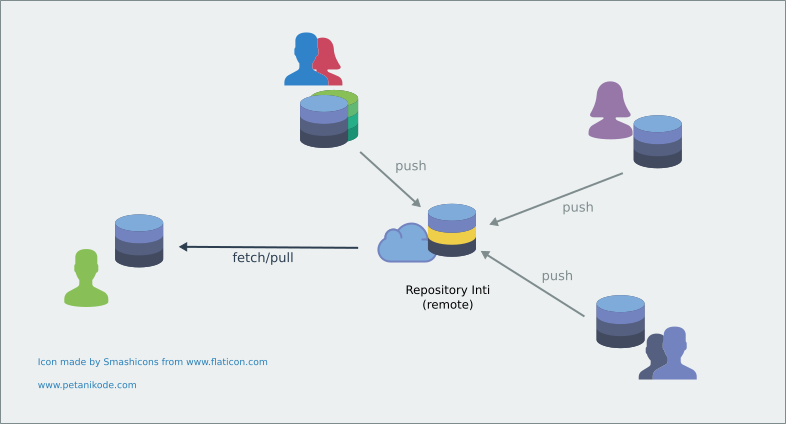

Git Guide
Ramadhan Bersama Lab
By : @fian_io
Whats ?
- Kenapa Git ?
- Instalasi Git
- Penggunaan Git Dasar
Git, Apa?
Version Control System ...
diciptakan Linux Torvalds ...
... Digunakan Banyak Orang
Kenapa, Pakai Git?
Memudahakan dalam ...
mengelola projek ...
... online maupun offline
No Git?

Using Git?
Instalasi
Linux
Use Your Terminal
sudo apt-get install git
yum install git
Cek installer version : git --version
Windows
Download First
Sesuaikan dengan arsitektur masing masing dan kebutuhan.
* Path Environment - Pilih Windows Command Prompt *Configurasi Awal
git config --global user.name "your github name"
git config --global user.email email@domain.com
git config --global core.editor atom
git config --list
Menciptakan Repository Awal
- Buat Folder Projek
- Inisialisasi Git Di Project
git config init
Bikin Beberapa File
3 Kelompok Kondisi File Di Git :
Modified | Staged | CommitedCek Kondisi File : git status
Membuat Revisian Pertama
Dengan
git add file1.html
git add file2.html
git add file3.html
Atau
git add file1.html file2.html file3.html
git add *.html
git add .
Simpan Perubahan
git commit -m "Comitan Pertamaku"
Membuat Revisian Kedua
Lakukan Perubahan Pada File Tertentu Terlebih DahuluCek Status ? Ada Perubahan Terdeteksi Disana?
Melihat Log Revisian
Beberapa Fungsi Log Revisian
git log
git log --oneline
git log nomercommit
git log namafile.ektensi
Melihat Diff Revisian
Beberapa Fungsi Log Revisian
git diff
git diff nomercommit
git diff namafile.eketensi
git diff nomercommit nomercommit
Membatalkan Revisian
- Modified File ? git checkout
- Stagged File ? git reset
- Commited File ? git revert
Git Checkout
git checkout namafile
git checkout nomercommit
Apa Yang Dilakukan ?
Git Reset
file yang sudah di add (git add), namun belum disimpan (git commit) ke dalam Git.
git reset namafile
git reset --type nomercommit
Apa Yang Dilakukan ?
Git Revert
git revert -n nomercommit
Apa Yang Dilakukan ?
Dibutuhkan Banyak Latihan
Branching
Kenapa saya memerlukan cabang pada repo ?
Gimana Bikinnya?
git branch namabranch
Pahami Dengan latihan
- Bikin file baru di cabang
- Cek di cabang utama ?
- Amati Perubahannya ?
Penggabungan Cabang
git checkout master
git merge namacabang

git checkout master
git merge namacabang
Jika terjadi bentrokan gimana?
Lakukan beberapa perubahan di file yang ada pada master dan cabang
lakukan penggabungan lagi
Mulai Meremote Repository
git remote add origin https://github.com/fianekame/reposi.git
git push -u origin master
Coba Bikin Perubahan Di Lokal Lalu Kirim Ke Remote
Perubahan Pada Remote
Coba Untuk Fetch
beri perubahan pada repo remote, lalu mulai mengambil perubahan
git fetch origin master
git diff master origin/master
git merge master origin/master
Coba Untuk Pull
beri perubahan pada repo remote, lalu mulai mengambil perubahan
git pull github master
Kapan Harus Pull Atau Fecth ?
| Fetch | Pull |
|---|---|
|  |  |
Clone And Contibute
Clone Our First Project
git clone https://github.com/fianekame/reposi.git